6 Podman images¶
6.1 Doelstellingen¶
Na dit hoofdstuk beheerst de student het volgende:
-
met podman search images opzoeken in de registries uit registries.conf;
-
uitleggen wat unqualified-search-registries betekent;
-
informatie over een image opvragen met podman inspect en die leesbaar maken met jq;
-
met de optie --format gericht filteren op .Config, .Config.Labels en .Config.Labels.help;
-
de documentatie van een image terugvinden in de Red Hat Ecosystem Catalog, op github.com/sclorg en op Docker Hub;
-
een webserver in een container starten en de inhoud van de website aanleveren via een gekoppelde map;
-
een database-server in een container starten en instellen met environment-variabelen;
-
vanaf de server verbinding maken met de database in de container;
-
uitleggen waarom WordPress en MariaDB elk in een eigen container draaien;
-
named volumes aanmaken voor de gegevens van de database en van de website;
-
een eigen netwerk aanmaken zodat de containers elkaar op naam vinden;
-
een WordPress-omgeving opzetten met twee containers en die afwerken via de webinterface;
-
de documentatie van een officiële image gebruiken om omgevingsvariabelen, poorten en volumes terug te vinden.
6.2 Inleiding¶
In dit hoofdstuk bekijken we een aantal images die veel gebruikt worden: een webserver, een database-server en WordPress. Je leert er telkens bij hoe je de documentatie van zo'n image terugvindt, want daarin staat precies hoe je ze moet gebruiken.
Let op: lang niet elk image is gebaseerd op RHEL. De officiële images van WordPress en MariaDB op Docker Hub bouwen bijvoorbeeld verder op Debian. In zo'n container werkt dnf dus niet en gebruik je apt. Bij images op basis van Alpine is dat weer apk. Kijk dus altijd eerst na op welke distributie een image gebouwd is voor je er pakketten in installeert.
6.3 Webserver¶
Met podman search kan je zoeken naar container images uit de registries die opgegeven zijn in /etc/containers/registries.conf:
student@serverXX:~$ less -N /etc/containers/registries.conf
…
22 unqualified-search-registries = ["registry.access.redhat.com", "registry.redhat.io", "docker.io"]
…
Je ziet heel veel commentaar (regels beginnend met #) maar je ziet op regel 22 een regel zonder #.
Met unqualified-search-registries geef je aan waar Podman moet zoeken wanneer je een image opgeeft zonder registry.
We zoeken eens naar een nginx-container.
student@serverXX:~$ podman search nginx
NAME DESCRIPTION
…
Je ziet zeer veel images.
We verfijnen dit door te zoeken naar regels waarin ubi10 voorkomt.
student@serverXX:~$ podman search nginx | grep ubi10
registry.redhat.io/ubi10/nginx-126 …
Zoals jullie weten is authenticatie vereist voor registry.redhat.io/ubi10/nginx-126.
In de Red Hat Ecosystem Catalog is ook info over UBI-images opgenomen.
We surfen naar de Red Hat Ecosystem Catalog: https://catalog.redhat.com.
Kies nu bovenaan voor Containers en typ in het zoekvenster nginx-126 in.
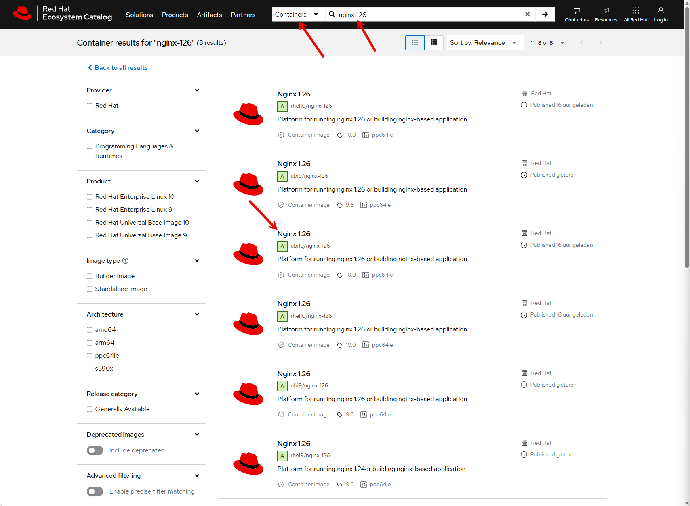
Klik op Nginx 1.26 bij ubi10 zoals hierboven staat aangegeven.
We krijgen nu onderstaande pagina. Klik op Get this image.
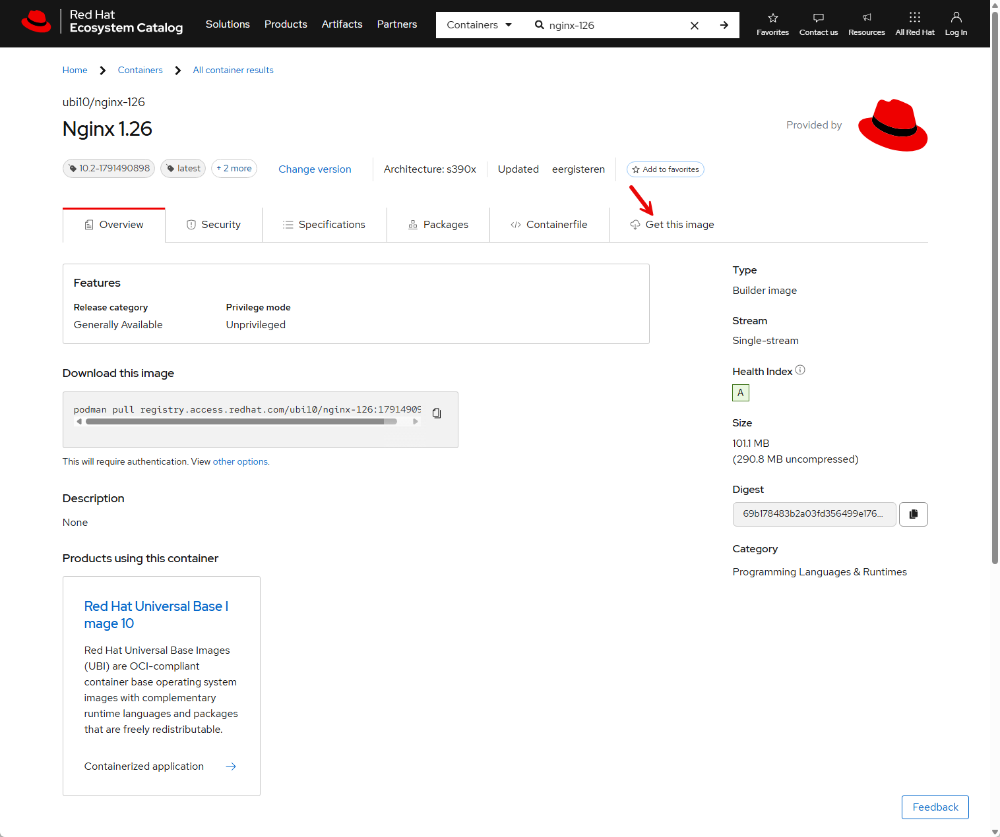
Je ziet nu dat je het image kan downloaden van registry.redhat.io.
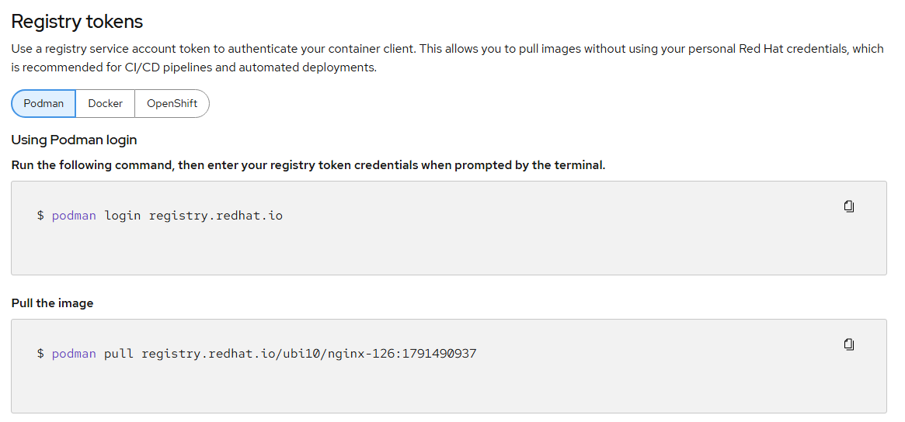
Onderaan zie je dat je het ook kan dowloaden zonder aanmelden van registry.access.redhat.com.
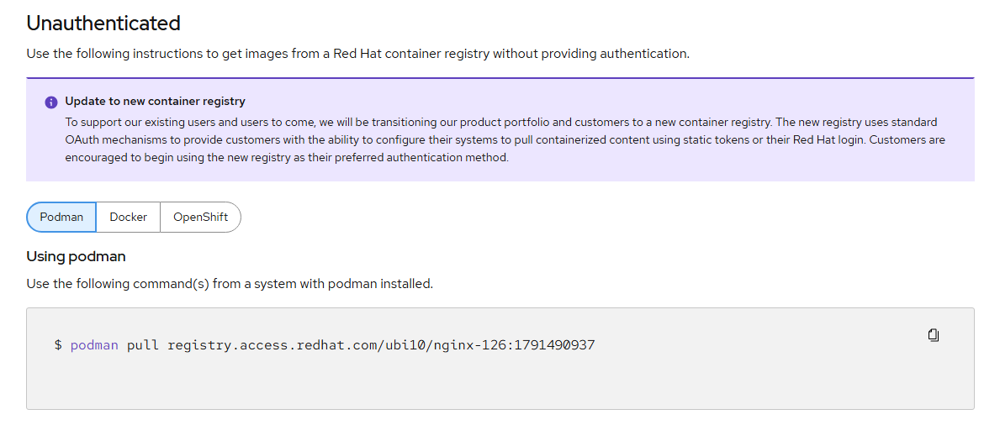
Bij nieuwe packages is de info vaak niet beschikbaar.
We pullen het image van registry.access.redhat.com. Zo moet je niet in te loggen.
student@serverXX:~$ podman pull registry.access.redhat.com/ubi10/nginx-126
Erna inspecteren we ubi10/nginx-126.
student@serverXX:~$ podman inspect ubi10/nginx-126
Je krijgt nu een nogal onoverzichtelijke output.
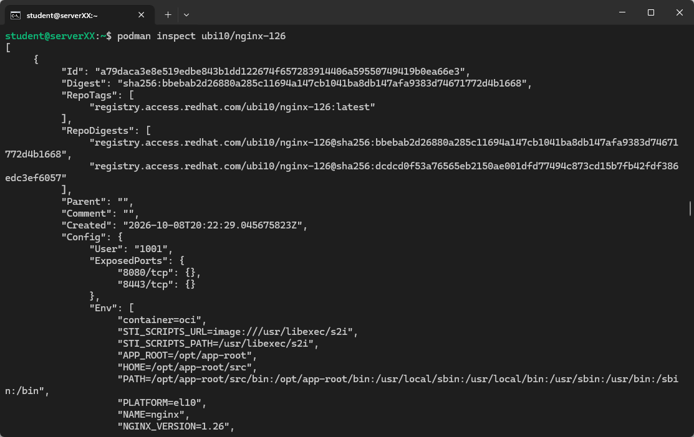
Dit komt omdat het JSON-formaat is.
Je kan dit verbeteren door jq te gebruiken. Dit maakt JSON mooi ingesprongen met kleuren.
student@serverXX:~$ podman inspect ubi10/nginx-126 | jq
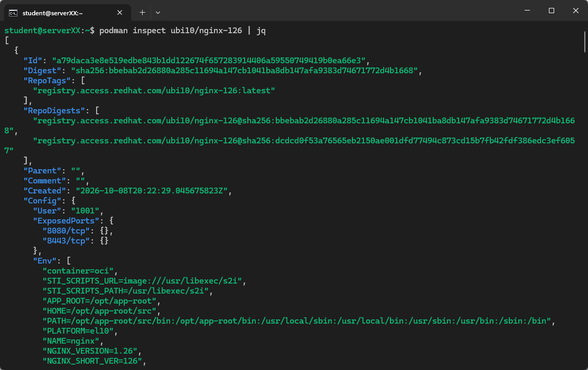
Je kan de uitvoer ook gericht filteren met --format.
student@serverXX:~$ podman inspect --format '{{json .Config}}' ubi10/nginx-126 | jq--format verwacht een Go-template: alles tussen {{ }} wordt vervangen door een waarde uit de inspect-uitvoer. .Config is het veld dat we willen, en json zet dat veld om naar JSON zodat jq het kan opmaken. De aanhalingstekens zijn er voor de shell.
Je houdt zo alleen het deel Config over, in plaats van de volledige uitvoer.
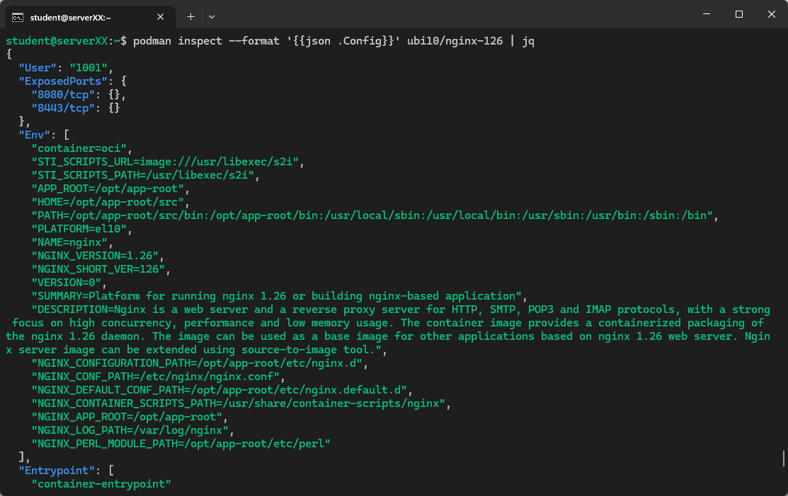
Je kan verder verfijnen naar .Config.Labels.
student@serverXX:~$ podman inspect --format '{{json .Config.Labels}}' ubi10/nginx-126 | jq
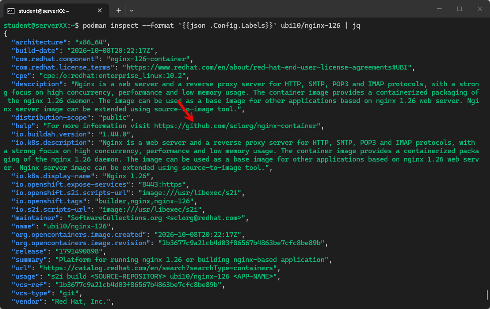
Je kan, zoals je ziet, meer info over deze image opvragen: https://github.com/sclorg/nginx-container.
Ik had het antwoord natuurlijk ook verder kunnen verfijnen naar .Config.Labels.help.
student@serverXX:~$ podman inspect --format '{{json .Config.Labels.help}}' ubi10/nginx-126 | jq
"For more information visit https://github.com/sclorg/nginx-container"
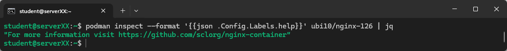
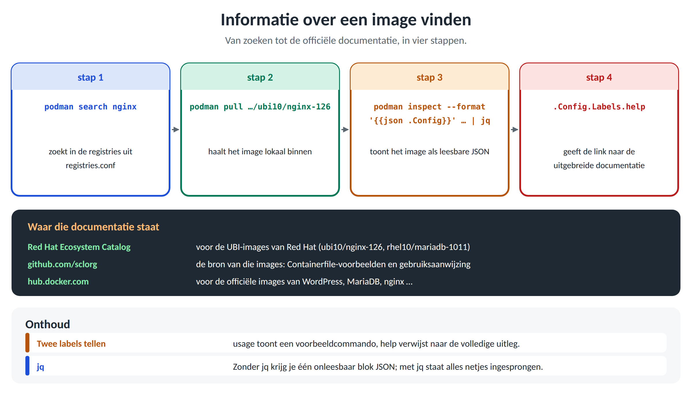
We surfen nu naar https://github.com/sclorg/nginx-container.
Klik nu in die pagina op nginx-1.26.
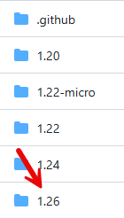
Je vindt op deze webpagina hoe je met een Containerfile een eigen image bouwt bovenop dit image.
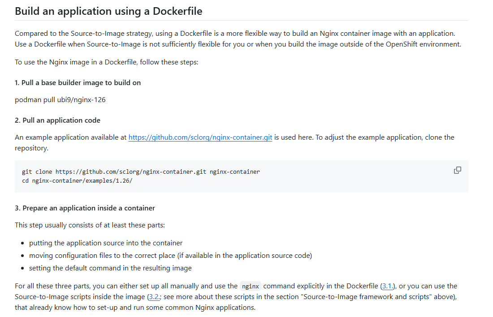
De werkwijze bestaat uit vijf stappen.
- Haal het basisimage binnen.
student@serverXX:~$ podman pull ubi10/nginx-126
Dit hebben we reeds gedaan.
- Haal de broncode van je toepassing op. Red Hat voorziet voorbeelden in zijn eigen repository.
student@serverXX:~$ sudo dnf install git-core
student@serverXX:~$ git clone https://github.com/sclorg/nginx-container.git
student@serverXX:~$ cd nginx-container/examples/1.26/
- Bereid de toepassing voor in de Containerfile. Daar horen telkens drie dingen bij: je broncode in het image plaatsen, de configuratiebestanden op de juiste plaats zetten, en het startcommando vastleggen.
student@serverXX:~/nginx-container/examples/1.26$`` ``nano Containerfile
FROM registry.access.redhat.com/ubi10/nginx-126
# Voeg de bestanden van de toepassing toe
ADD test-app/nginx.conf "${NGINX_CONF_PATH}"
ADD test-app/nginx-default-cfg/*.conf "${NGINX_DEFAULT_CONF_PATH}"
ADD test-app/nginx-cfg/*.conf "${NGINX_CONFIGURATION_PATH}"
ADD test-app/*.html .
# Start nginx op de voorgrond
CMD nginx -g "daemon off;"
De variabelen ${NGINX_CONF_PATH} en de twee andere staan al in het image gedefinieerd. Je hoeft de exacte paden dus niet te kennen; opvragen kan met podman inspect --format '{{json .Config.Env}}' ubi10/nginx-126 | jq. De laatste regel zorgt ervoor dat nginx op de voorgrond draait. Zonder daemon off zou nginx zich naar de achtergrond sturen en zou de container meteen afsluiten.
- Bouw het image.
student@serverXX:~/nginx-container/examples/1.26$ podman build -t nginx-app .
- Start een container met het resultaat.
podman run -d nginx-app (voer dit niet uit)
Zonder publicatie draait de webserver wel, maar geraak je er van buitenaf niet bij. Je kan enkel testen vanuit de container zelf. student@serverXX:~/nginx-container/examples/1.26$ podman run -d -p 8080:8080 nginx-appCheck dit.
student@serverXX:~/nginx-container/examples/1.26$ curl localhost:8080 <html> <head> <title>Test NGINX passed</title> </head> <body> <h1>NGINX is working</h1> </body> </html>
We verwijderen nu deze container.
student@serverXX:~$ podman rm fa -f
fa is hier natuurlijk de container ID.
Op dezelfde webpagina staat ook hoe je onmiddellijk het image kan gebruiken via een gekoppelde directory.
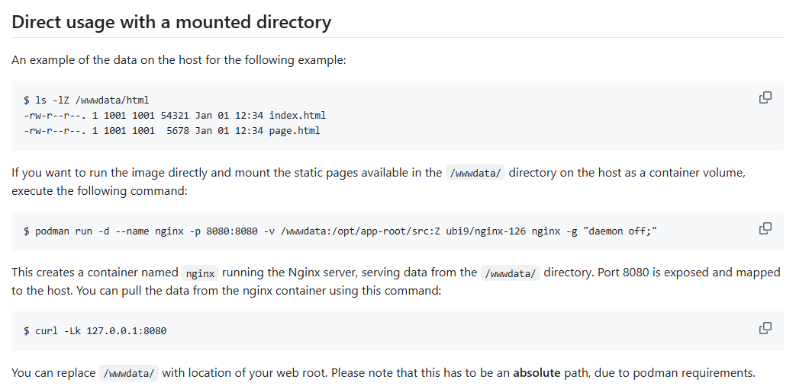
- Maak eerst de directorystructuur aan.
student@serverXX:~$ sudo mkdir -p /wwwdata/html
- Maak de startpagina index.html aan.
student@serverXX:~$ echo "Dit is een eenvoudige website" | sudo tee /wwwdata/html/index.html
Dit is een eenvoudige website
- We controleren de webpagina.
student@serverXX:~$ cat /wwwdata/html/index.html
Dit is een eenvoudige website
- We starten nu een container op aan de hand van het image.
student@serverXX:~$ sudo podman run -d --name nginx -p 8080:8080 -v /wwwdata/html:/opt/app-root/src:Z ubi10/nginx-126 nginx -g "daemon off;"
…
45bc04da9ccfc27077875faaad64e09499ab587adb340b06fbb7846b75a2f418
Er staat een fout in de beschrijving (/wwwdata/html i.p.v. /wwwdata) op de webpagina maar het principe is duidelijk.
We vragen nu de webpagina op.
student@serverXX:~$ curl http://192.168.112.100:8080
Dit is een eenvoudige website
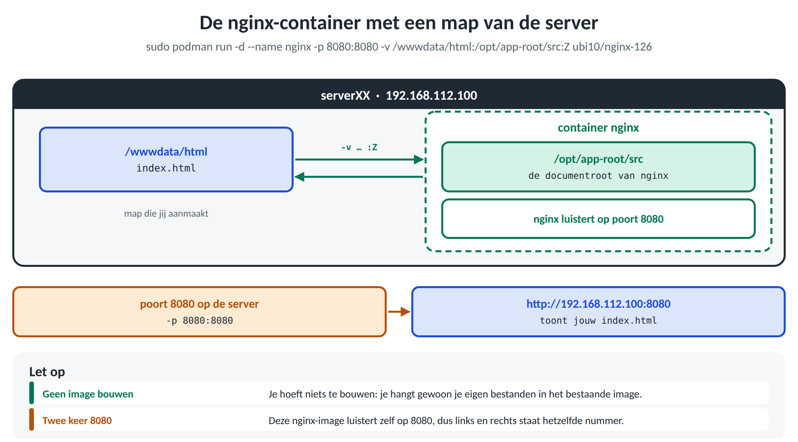
6.4 Database-server¶
We zoeken nu eens een mariadb-image.
student@serverXX:~$ podman search mariadb | grep rhel10
registry.redhat.io/rhel10/mariadb-1011 MariaDB is an open-source relational databas...
registry.redhat.io/rhel10/mariadb-118 MariaDB is an open-source relational databas...
We zoeken informatie op over deze container image na het inloggen (nodig voor registry.redhat.io) en pullen.
student@serverXX:~$ podman login registry.redhat.io
Username: stijnjacobs
Password:
Login Succeeded!
student@serverXX:~$ podman pull registry.redhat.io/rhel10/mariadb-118
…
73160d3c62cf1049a14422b281e686ab3a9aee6af04e42f9a6918e9263ebf0a6
student@serverXX:~$ podman inspect --format '{{json .Config}}' registry.redhat.io/rhel10/mariadb-118 | jq
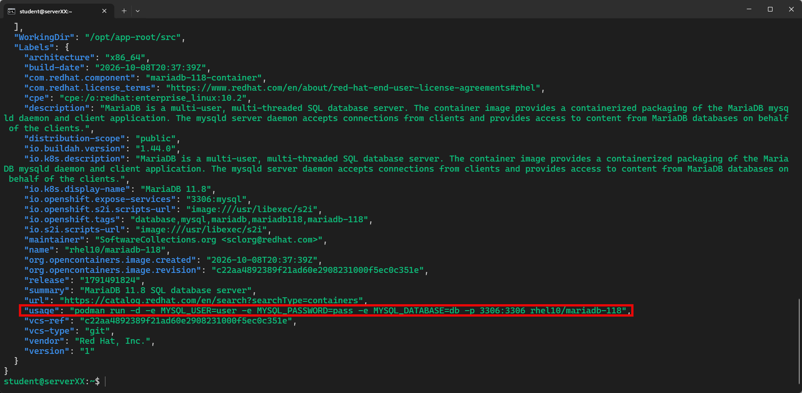
Hier staat heel duidelijk hoe je de containerimage moet gebruiken!
Je kan het onderdeel “usage” natuurlijk ook onmiddellijk eruit filteren.
student@serverXX:~$ podman inspect --format '{{json .Config.Labels.usage}}' registry.redhat.io/rhel10/mariadb-118 | jq
"podman run -d -e MYSQL_USER=user -e MYSQL_PASSWORD=pass -e MYSQL_DATABASE=db -p 3306:3306 rhel10/mariadb-118"
Aan de hand hiervan kunnen we onderstaande opbouwen.
student@serverXX:~$ podman run -d -e MYSQL_USER=student -e MYSQL_PASSWORD=abc -e MYSQL_DATABASE=testdb -p 3306:3306 rhel10/mariadb-118
17c89d9b9ffdae9508c46b33b39e5d7a4bc2c8b9f8f3becf3a2950fb7ba1e01b
De database-server is gestart en blijft draaien.
student@serverXX:~$ podman ps
CONTAINER ID IMAGE COMMAND …
17c89d9b9ffd registry.redhat.io/rhel10/mariadb-118:latest run-mysqld …
In de kolom COMMAND zie je run-mysqld staan. Dat is het hoofdproces van de container, een script uit het image dat de database op de voorgrond start. Een container blijft immers maar draaien zolang haar hoofdproces draait: sluit run-mysqld af, dan stopt ook de container.
Je kan nu uiteraard verbinding maken met deze database vanaf ServerXX. Je moet wel de sql-client installeren.
student@serverXX:~$ sudo dnf install mariadb
We kunnen nu verbinding maken met het wachtwoord abc.
student@serverXX:~$ mysql -h 127.0.0.1 -P 3306 -u student -p testdb
Enter password:
elcome to the MariaDB monitor. Commands end with ; or \g.
Your MariaDB connection id is 3
Server version: 11.8.8-MariaDB MariaDB Server
Copyright (c) 2000, 2018, Oracle, MariaDB Corporation Ab and others.
Type 'help;' or '\h' for help. Type '\c' to clear the current input statement.
MariaDB [testdb]>
We gaan nu geen database configureren maar zien dat het mogelijk is. Verlaat MariaDB.
MariaDB [testdb]> exit
Bye
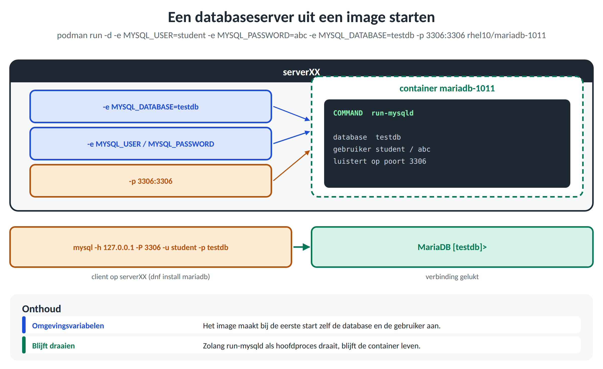
6.5 WordPress¶
6.5.1 Images die we gebruiken¶
Vorig academiejaar hebben jullie WordPress leren installeren in de OLOD Linux Advanced.
Jullie hebben toen daarvoor:
-
Een webserver (httpd) geïnstalleerd en geconfigureerd
-
Httpd gestart.
-
Bestanden WordPress geplaatst in /var/www/html.
-
Rechten en eigenaar aangepast van de WordPress-bestanden.
-
-
Een database management system geïnstalleerd en geconfigureerd.
-
Mariadb gestart.
-
Een database met een user en een wachtwoord aangemaakt.
-
-
PHP geïnstalleerd en geconfigureerd.
-
WordPress geconfigureerd zodat die met de database overweg kan.
- Wp-config.php geconfigureerd voor database.
We gaan WordPress installeren en configureren gebruik makend van containers.
We gaan nu gebruik maken van de officiële image van WordPress op de Docker Hub: https://hub.docker.com.
Typ in de zoekbalk wordpress in en selecteer links Docker Official Image.
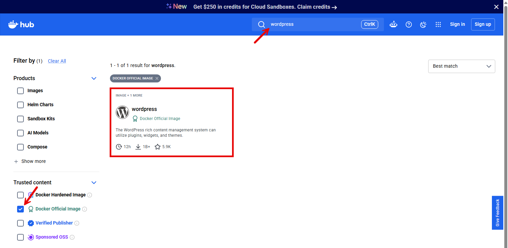
Je ziet nu het officiële image van WordPress staan. Klik erop.
Je vindt nu info over hoe je het image gebruikt. Hieronder zie je de voor ons belangrijkste informatie (podman compose zien we volgend hoofdstuk).
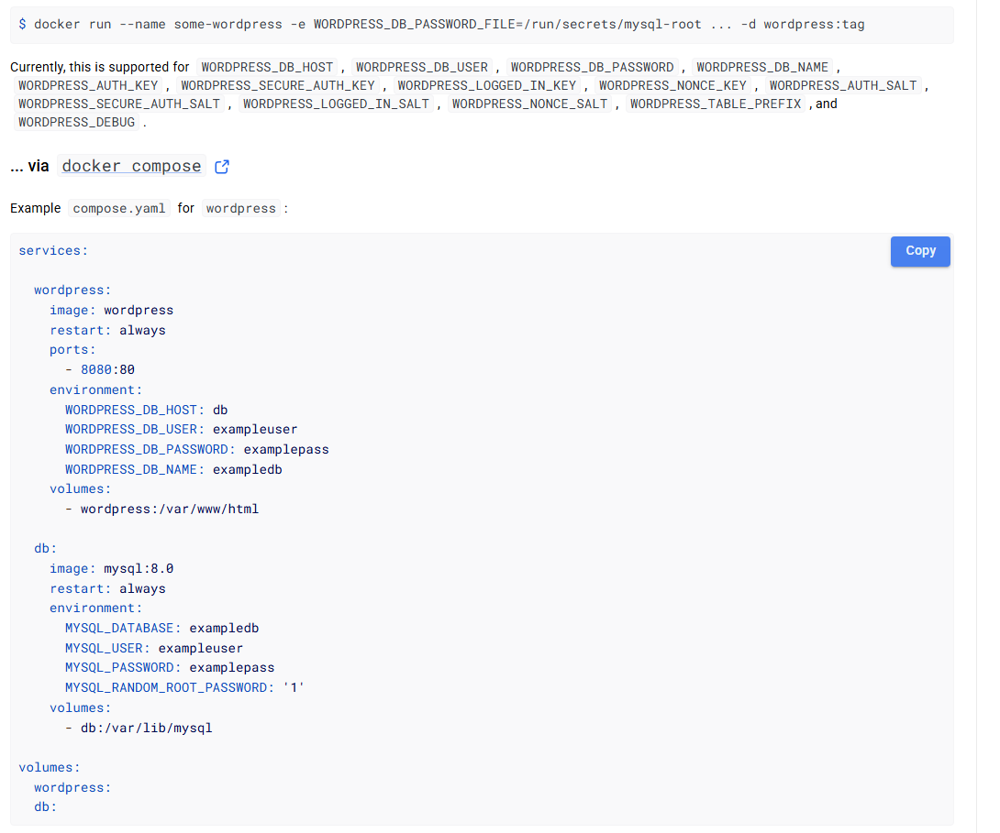
-
De officiële WordPress Docker image bevat standaard PHP, omdat WordPress in PHP is geschreven.
-
De officiële WordPress Docker image bevat geen databaseserver. De database wordt dus gebruikelijk in een aparte container gedraaid.
Ga terug naar de Docker Hub: https://hub.docker.com/.
Zoek nu naar mariadb.
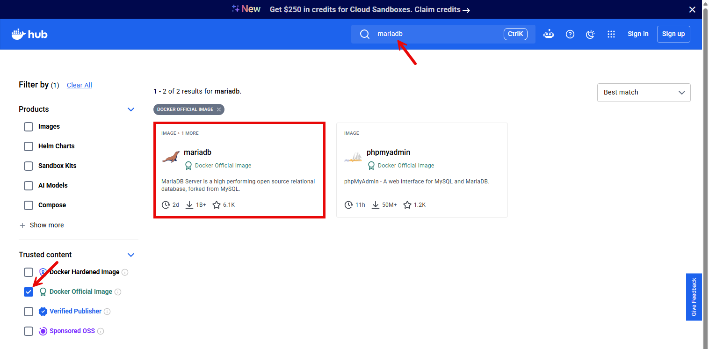
Je ziet nu het officiële image van mariadb staan. Klik erop.
Je vindt nu info over hoe je het image gebruikt. Hieronder vind je de informatie op de pagina die voor ons belangrijk is.
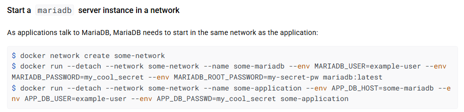
en
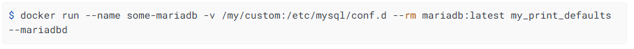
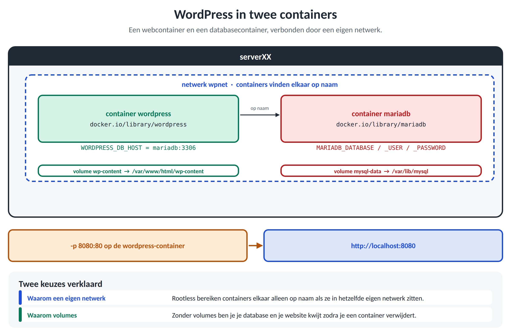
Hieronder zie je in één oogopslag hoe we die omgeving opbouwen. Elke stap komt hierna uitgebreid aan bod.
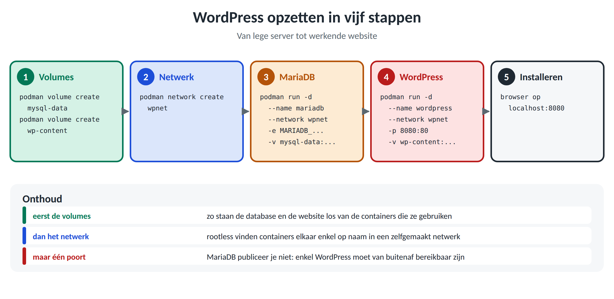
6.5.2 Podman volumes aanmaken¶
Je wil natuurlijk niet dat je de gegevens van de database en de website verliest als een container zich afsluit. We maken hiervoor 2 named volumes aan voor de 2 containers die we zullen gebruiken.
student@serverXX:~$ podman volume create mysql-data
mysql-data
student@serverXX:~$ podman volume create wp-content
wp-content
6.5.3 Podman netwerk aanmaken¶
We willen uiteraard dat de 2 containers met elkaar kunnen communiceren. Hiervoor dien je, aangezien we rootless werken, een netwerk aan te maken. Dat is het meest betrouwbaar.
student@serverXX:~$ podman network create wpnet
wpnet
6.5.4 Container MariaDB¶
We zullen nu een container starten met MariaDB.
student@serverXX:~$ podman run --detach --network wpnet --name mariadb -e MARIADB_ROOT_PASSWORD='ServerXXdocker007' -e MARIADB_DATABASE='wordpress' -e MARIADB_USER='wp' -e MARIADB_PASSWORD='ServerXXdocker1' -v mysql-data:/var/lib/mysql:Z docker.io/library/mariadb:latest
9db3b5a582b291eeb216a8e5ac26c9402283aad7f751ca21b8654ee5d40a360e
--detach zorgt ervoor dat de container detached start.
--name mariadb geeft de container de naam mariadb.
--network wpnet verbindt de container met een bestaand netwerk dat wpnet heet.
-e is een environment variable.
MARIADB_ROOT_PASSWORD = wachtwoord van de databasebeheerder root.
MARIADB_DATABASE = er wordt automatisch een database gemaakt met de naam wordpress.
MARIADB_USER = er wordt een nieuwe gebruiker wp aangemaakt.
MARIADB_PASSWORD = wachtwoord van die gebruiker (wp).
De directory waarin de database bewaard wordt, wordt opgeslagen in mysql-data.
MariaDB wordt met andere woorden met het netwerk verbonden en er wordt een database aangemaakt met een gebruiker en wachtwoord die daarvan gebruik mogen maken.
Ter controle kan je kijken of MariaDB connecties aanvaardt.
student@serverXX:~$ podman logs -f mariadb
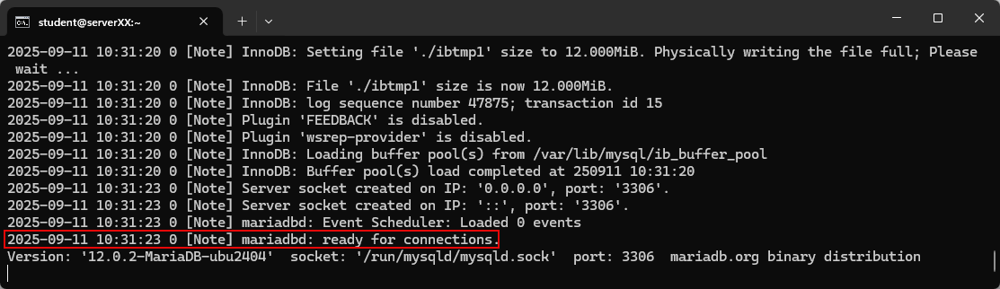
Ga eruit door <CTRL> + C te typen.
De container blijft draaien zolang mariadb draait.
student@serverXX:~$ podman ps
CONTAINER ID IMAGE COMMAND …
9db3b5a582b2 docker.io/library/mariadb:latest mariadbd …
6.5.5 Container WordPress¶
We starten nu een container op met WordPress. Aangezien we rootless werken publiceren we de poort naar 8080 op de host. We stellen ook de verbinding met de databaseserver in.
student@serverXX:~$ podman run -d --name wordpress --network wpnet -p 8080:80 -e WORDPRESS_DB_HOST='mariadb:3306' -e WORDPRESS_DB_USER='wp' -e WORDPRESS_DB_PASSWORD='ServerXXdocker1' -e WORDPRESS_DB_NAME='wordpress' -v wp-content:/var/www/html/wp-content:Z docker.io/library/wordpress:latest
…
143026fcf4b0516884bb68e014bc4131c23514d94496529e98c1c4c13f8c7700
-d zorgt ervoor dat de container detached start.
--name wordpress geeft de container de naam wordpress.
--network wpnet verbindt de container met een bestaand netwerk dat wpnet heet.
-e is een environment variable.
Je ziet dat de gegevens over de database hier terugkomen.
De website wordt opgeslagen in het named volume wp-content.
We kunnen al een kleine test doen of de website beschikbaar is.
student@serverXX:~$ netstat -tlpn | grep 8080
…
tcp6 0 0 :::8080 :::* LISTEN 5279/rootlessport
Er is dus een website beschikbaar op poort 8080.
6.5.6 Website WordPress configureren¶
Ga naar de browser van ServerXX en typ http://localhost:8080 in.
Kies in het eerste venster voor Nederlands (België) zoals je hieronder ziet.
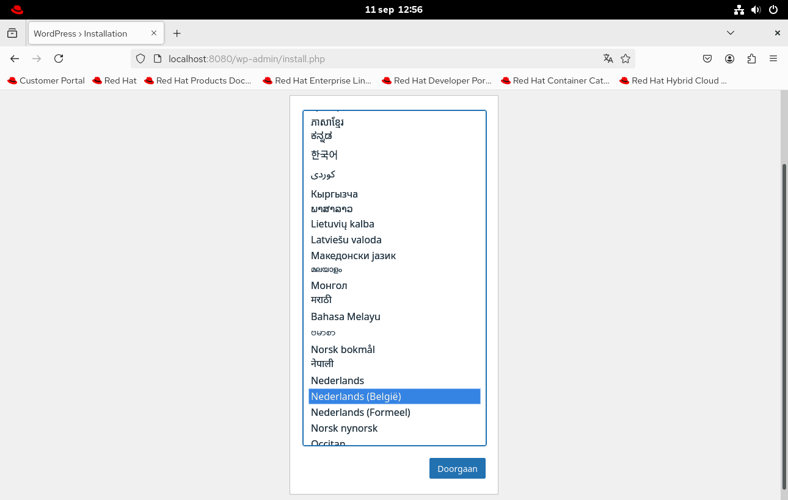
Klik erna op Doorgaan.
Je kan nu onmiddellijk de info over de website ingeven die je wenst. De database is immers al gekoppeld.
Vul nu gegevens in analoog met onderstaande.
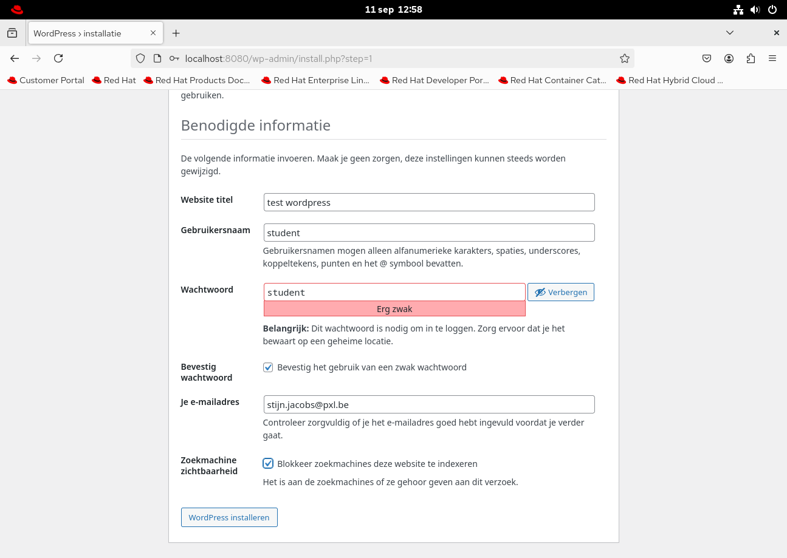
Klik erna uiteraard op WordPress installeren.
Je krijgt nu de melding dat WordPress is geïnstalleerd.
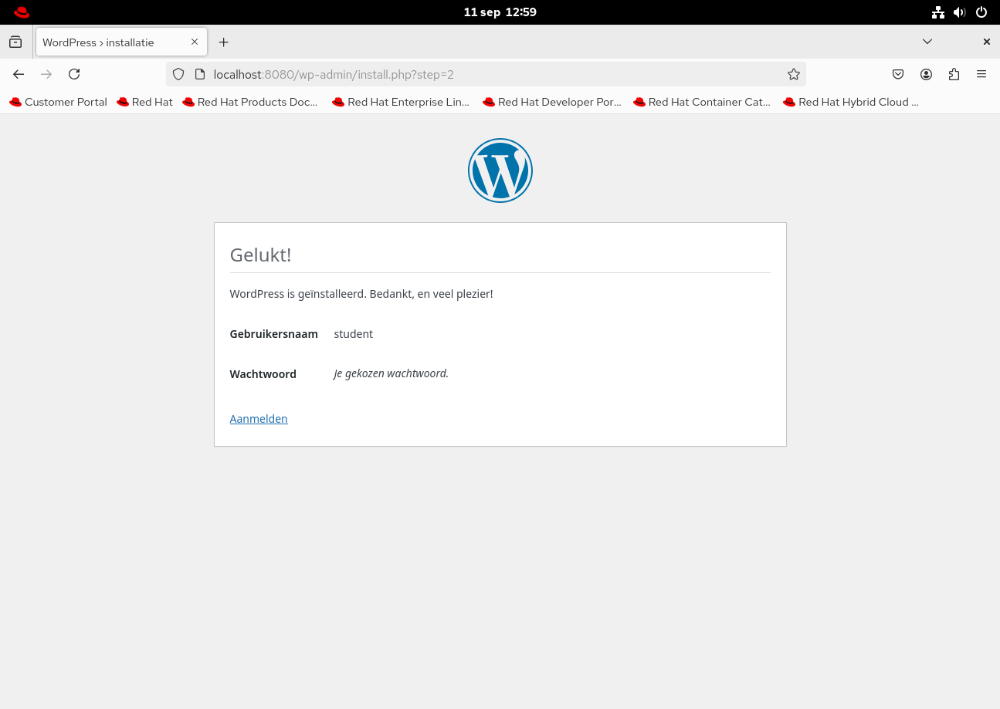
Klik uiteraard op Aanmelden.
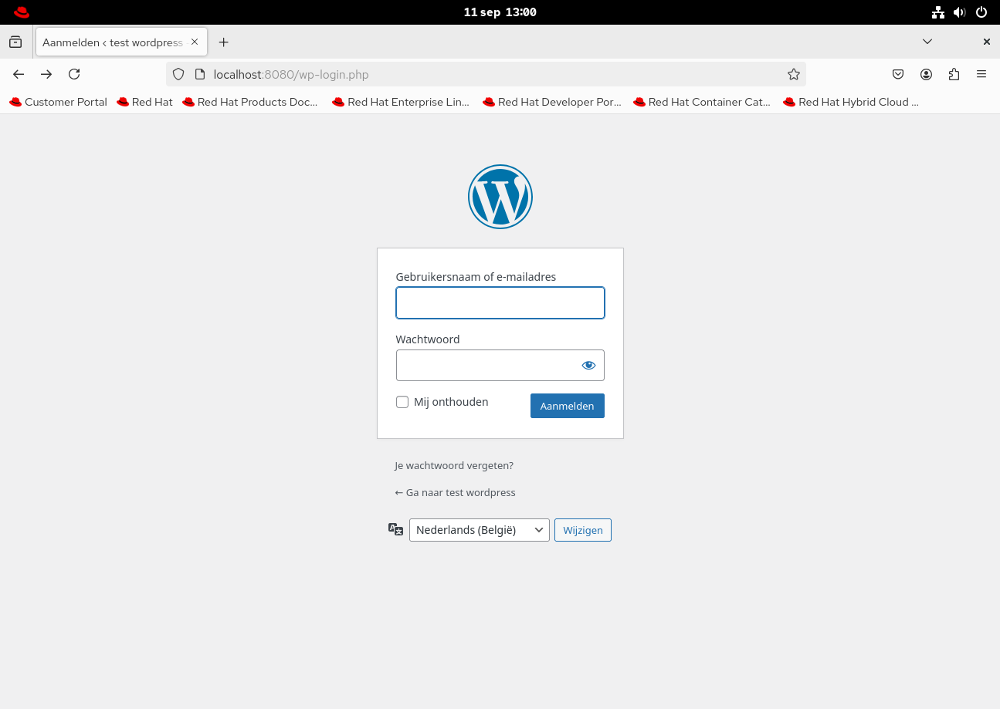
Je kan de website beheren door eerst de Gebruikersnaam of e-mailadres en wachtwoord in te geven.
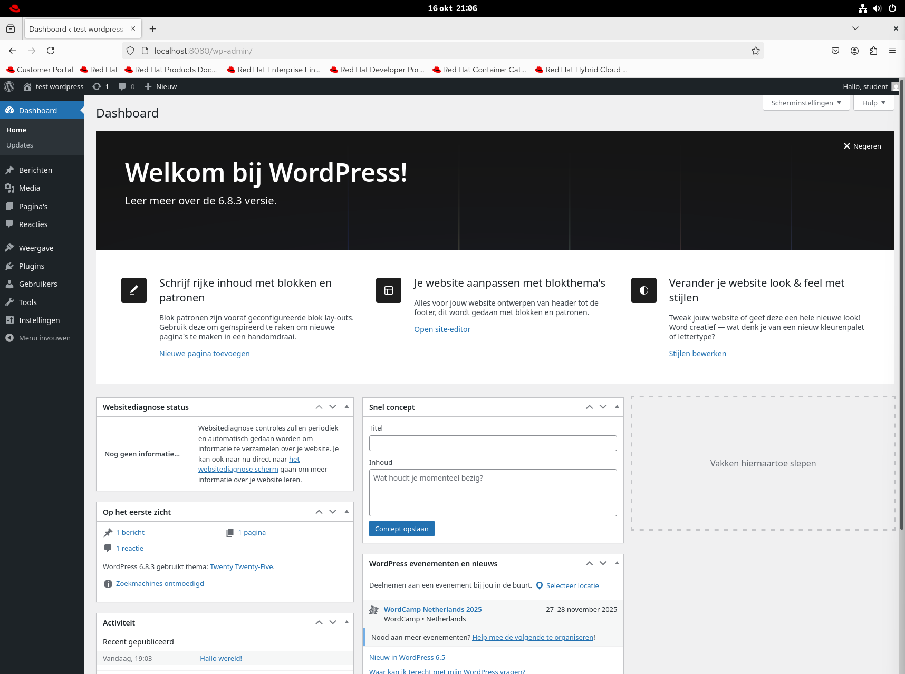
Je kan nu naar de website zelf gaan door rechtsboven te klikken op “test wordpress”, website bezoeken te klikken.
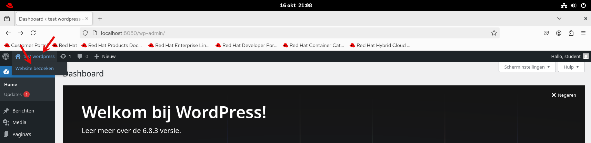
Je kan uiteraard ook http://localhost:8080 of http://192.168.112.100:8080/ intypen.
De configuratie van de website is altijd bereikbaar via http://localhost:8080/wp-admin/.
Verder gaan we hier niet op in. Dat is voor andere collega’s in de ICT-afdeling.
6.6 Tips¶
Elke officiële image heeft een uitgebreide beschrijving.
Daar vind je info over o.a.:
-
Omgevingsvariabelen (zoals MARIADB_ROOT_PASSWORD, WORDPRESS_DB_HOST).
-
Standaard poorten (bijv. MariaDB = 3306, WordPress/Apache = 80).
-
Volumes (waar je data kan mounten).